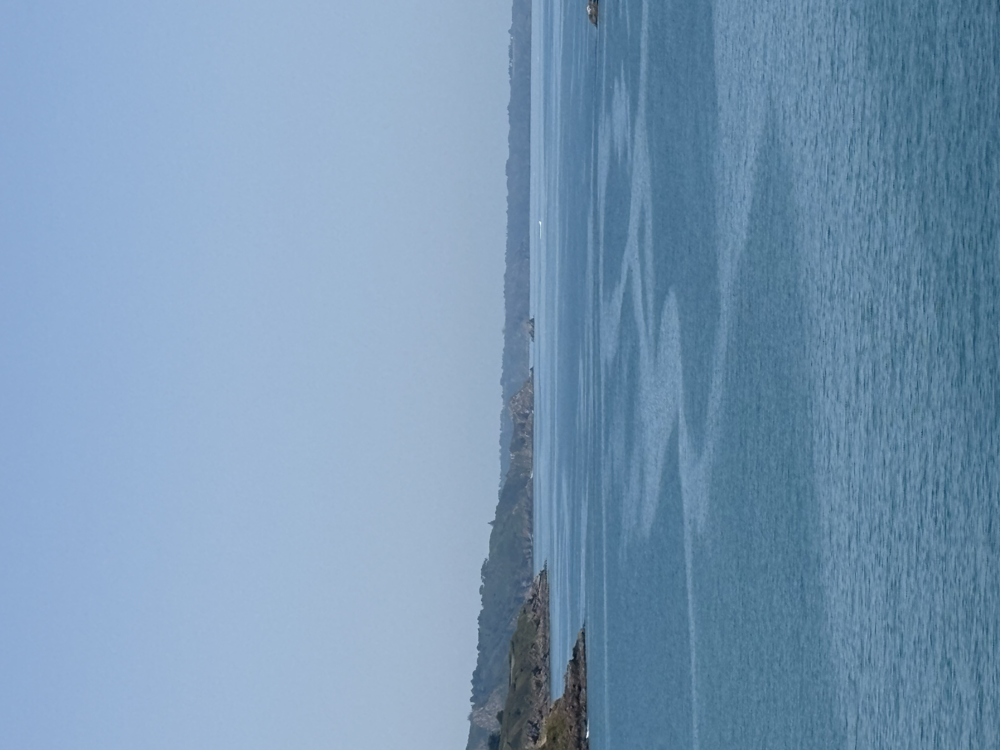

Groupe Blanc
Tu reprends le vélo ou tu veux juste profiter du paysage. On roule tranquille, on s'arrête, on profite.
Parcours · La Route des Falaises

Baie du Goëlo · été 2026
Sorties vélo conviviales au bord de l’eau — départ au port de Saint-Quay-Portrieux.
Tu es de passage ou du coin ? Rejoins un groupe à ton rythme.
Pas d’adhésion. Pas de chronomètre. Juste rouler ensemble.
Choisis ton niveau, rejoins la route
Tu reprends le vélo ou tu veux juste profiter du paysage. On roule tranquille, on s'arrête, on profite.
Parcours · La Route des Falaises
Tu roules régulièrement mais l'ambiance compte autant que la performance. On attend tout le monde.
Tu maîtrises le peloton, tu fais des relais. Parcours structuré avec un bon groupe.
Parcours · La Grande Boucle du Goëlo
Pour les jambes solides. Rythme élevé. Si tu te reconnais ici, tu sais ce qui t'attend.
Pas sûr de ton groupe ? Viens en Blanc ou Vert pour la première fois — on t'aide à te placer, sans pression.
Deux itinéraires au départ de Saint-Quay-Portrieux · Côte du Goëlo
Les tracés GPX ne se chargent pas en ouvrant le fichier directement. Lance un serveur local
(python3 -m http.server 8765) puis ouvre
http://127.0.0.1:8765.
Compare les deux parcours, puis touche celui que tu veux voir sur la carte.
Choisis ton parcours pour afficher la date de départ, la carte et l’inscription.
| Jour 7 |
— km |
| Mois JUILLET |
La Route des Falaises |
| Heure 8h30 |
Groupe Blanc |
|
15–18 km/h · Découverte |
|
|
Falaises et villages côtiers · rythme tranquille RDV 8h30 · Parking du port, Saint-Quay-Portrieux |
Inscris-toi pour le parcours choisi — ton prénom apparaît dans la liste ci-dessous.
0 inscrit·e·s sur ce parcours
Personne pour l’instant — sois le ou la première !
Merci ! Ton inscription est envoyée — ton prénom sera ajouté à la liste très vite.
Gratuit · sans engagement · tu peux annuler jusqu’à la veille.
Tu préfères Instagram ? @goelo.rides